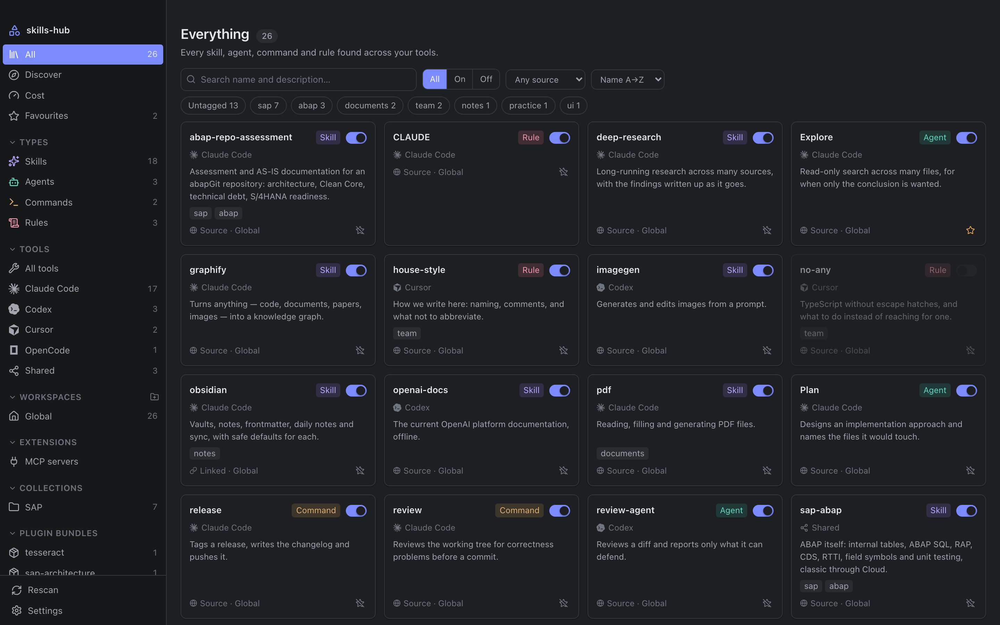

MCP servers, read-only
Every MCP server every tool is configured with, global and per project, in one list. Looked at, never touched.

macOS · Windows · Linux · MIT
The skills, agents, commands and rules that every AI coding tool keeps in a folder of its own — gathered into one window that acts on the real folders. Switch something off and the tool genuinely stops seeing it.
brew install --cask nimble-123/tap/skills-hub
One surface
~/.claude/skills, ~/.cursor/rules, ~/.codex/prompts,
~/.agents/skills and a dozen more — global and per project — read into a single library and
sorted into four kinds of thing.

Real files
Disabling an item moves it into a .skillmanager-disabled folder beside where it was, and enabling
moves it back. No checkbox in a database the tool never reads — the tool genuinely stops seeing it.
It is symlink-aware. A relative link is recomputed for its new depth rather than flattened into an absolute path, so a shared skills folder keeps working after the round trip. Try it.
Nothing moved yet.
Your notes
One small markdown file per item, frontmatter and all, in a folder you choose. Point it at an Obsidian vault and your tags sync with everything else you keep there, queryable from Dataview.
A note is only rewritten when something actually changed, and a note carrying your own tags is never removed automatically. Your skills themselves are never moved or copied there.
---
name: review-sql
description: Checks migrations before they ship
type: skill
tool: claude-code
sourcePath: ~/.claude/skills/review-sql
enabled: true
# yours — never touched by a scan
tags: [database, review]
favorite: true
---Install & update
Search the skills.sh registry by name, or point it at any repository git can reach — no account, no token. Watching a repository clones it, walks it, and lists everything installable. Anything installed records the commit it came from, so an update arrives as a diff before a single byte is overwritten, and can be put back the way it was.


Cost
Every item costs something twice. Its name and description ride along on every turn, so the model knows it exists. Its body is loaded on invocation. The cost page keeps the two apart — and where a tool keeps a history, that history says what has actually been used rather than guessing from how old a file is.
Usage read from Claude Code and Codex session history.

Every MCP server every tool is configured with, global and per project, in one list. Looked at, never touched.
Bundles from Claude Code and Codex, with their items in the library and each bundle switchable as a whole.
Registry search and repository installs need no token either. Nothing to sign in to, and no telemetry.
On macOS: search the whole library from the menubar and flip a switch without leaving your editor. The popover and the window move the same files and tell each other.

Sixteen sources
Each tool's default folders, known out of the box. Every path is editable, so a tool that moves its folders — or a setup that was never standard — does not have to wait for a release.
~/.claude/skills ~/.cursor/rules ~/.codex/prompts ~/.config/opencode/agents ~/.gemini/config/skills ~/.copilot/skills ~/Documents/Cline/Rules ~/.trae/skills ~/.windsurf/rules ~/.config/goose/skills ~/.hermes/skills ~/.pi/agent/skills ~/.gemini/commands ~/.roo/rules .continue/rules ~/.agents/skills Make it yours
Every palette and every typeface ships inside the app — nothing is fetched. Pick one:

Under the chrome
Tauri and Rust. The domain crate never imports tauri — cargo deny bans it — and a
command-line harness that links the domain and nothing else is the proof the boundary holds. $HOME
is injected rather than read, so the scanner is tested against temporary directories.
No account. No telemetry. MIT licensed.
src/
src-tauri/
crates/core/
Banned here by deny.toml: tauri
A universal build — Apple silicon and Intel in one.
brew install --cask nimble-123/tap/skills-hub
Open the app, let it be refused, then allow it under System Settings → Privacy & Security, where an Open Anyway button now sits. Or take the quarantine flag off yourself:
xattr -dr com.apple.quarantine /Applications/skills-hub.app
winget install nimble-123.skills-hub
The winget manifest is in review. Until it is
merged, take the -setup.exe from
the latest release.
The .deb or the .AppImage from the latest release — which is also where every installer above comes from.
pnpm install && pnpm tauri build
Produces a .app and .dmg on macOS, or the platform's equivalent elsewhere.
On first launch it asks where to keep its notes. Your skills are never moved or copied — only those notes live there.